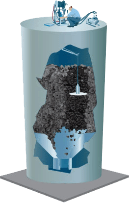
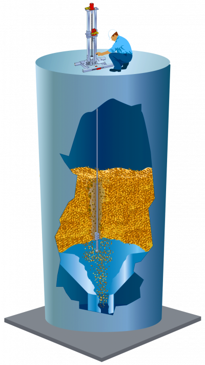
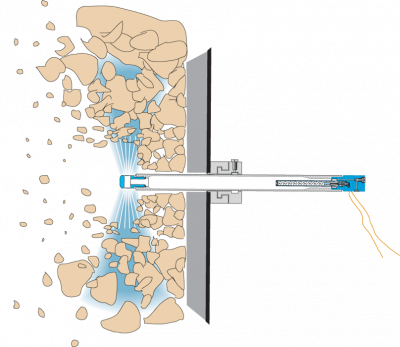
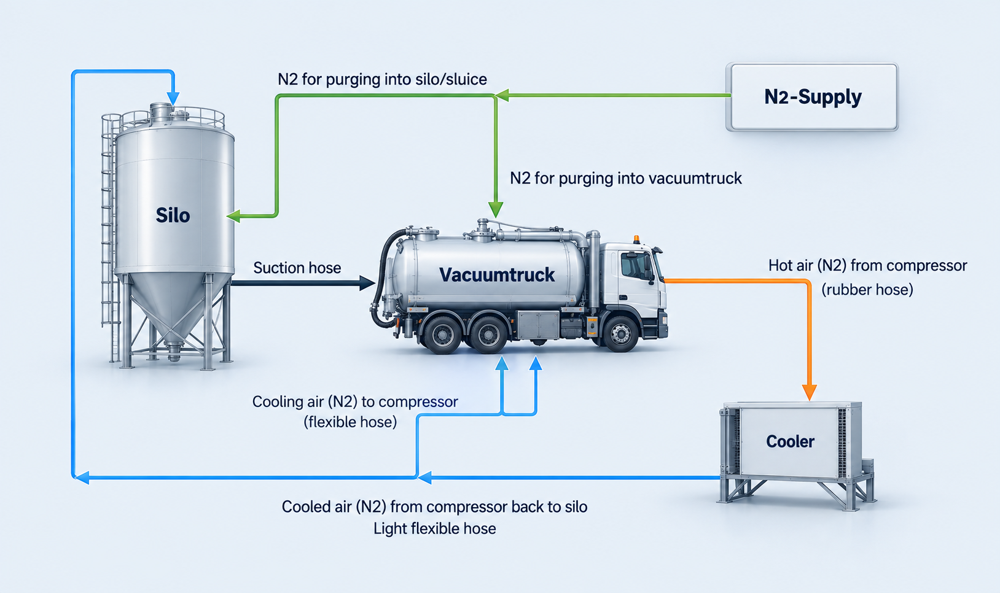
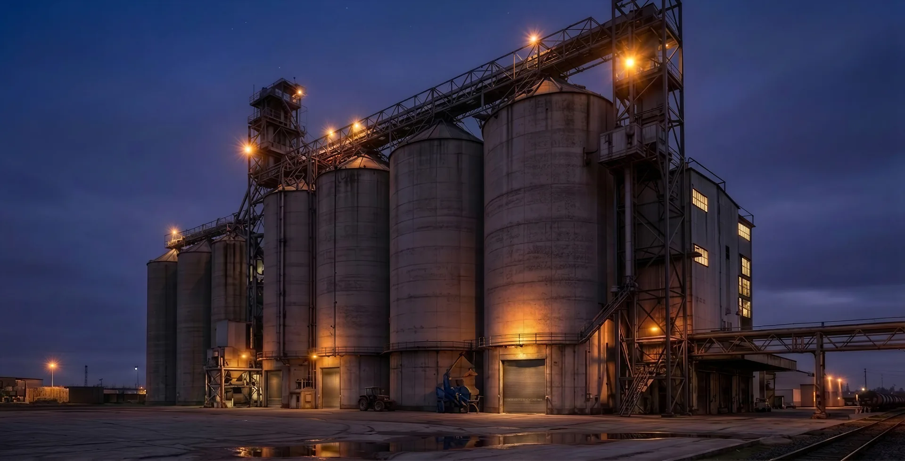

No-entry technology
Advanced No-Entry Silo Stability Systems
BluePower uses BinWhip, BinDrill and Cardox technology from Pneumat Systems to restore silo stability and material flow without confined-space entry.
Our remote-controlled solutions provide controlled, safe and highly efficient silo stability restoration without confined-space entry. This reduces HSE risk, downtime and operational disruption, especially valuable for Maintenance managers, Plant/Operations managers and HSE teams responsible for safety and productivity.
The equipment is designed to handle a wide range of materials, including cement, gravel/aggregates, fertiliser, grain, salt and other bulk solids. Whether the challenge is build-up, bridging, uneven discharge or hardened blockages, the systems support precise and effective material removal to restore stable material flow.
Please read on for a brief description of the Pneumat systems we use:
Engineered for Safety and Compliance
All systems are:
- Anti-static and spark-resistant
- Designed to meet strict industrial HSE and operational safety requirements
- Suitable for chemical and food-related environments where hygiene and safety standards apply
- ATEX-compliant for hazardous dust environments (where applicable to the site classification)
The modular design allows for rapid installation and flexible configuration based on silo size and site conditions. Equipment can be deployed quickly, to minimize lead time and support predictable execution. The systems can clean silos up to 65 meters deep – without requiring confined-space entry at any stage.

BinWhip
System for loosening content that has attached itself to the wall.
- Remote-controlled system, carefully removes any deposits
- Can be used for virtually any type of bulk materials
- Fully restores the storage capacity of the silo
- Does not damage the silo walls

BinDrill
System for loosening a bridge. Drilling system that works in the same way as oil drilling.
- Ideal for loosening content when a silo is completely bridged (up to 45 metres)
- Fully restores the storage capacity of the silo
- Can be used for virtually any type of bulk materials
- Does not damage the silo walls

Cardox
System for loosening a silo blocked with hard materials.
- Breaks up compacted materials in storage tanks through the rapid release of liquid carbon dioxide
- Permanent Cardox® pipe sleeves can be installed on the outside of the silo

Atmosphere O2 Control
Suppresses silo fires by reducing oxygen levels — preventing ignition and protecting both material and structure.
- Reduces oxygen levels inside the silo to suppress active fires and prevent re-ignition
- Protects both material and silo structure without requiring human entry or water-based suppression

Need help restoring flow in a blocked or unstable silo?
Talk to us about your situation. We’ll assess the challenge and recommend the safest next step.
Response-focused for industrial sites across Norway, the Nordics and the EU.